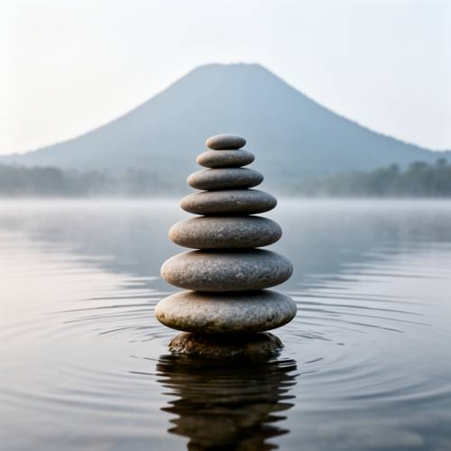
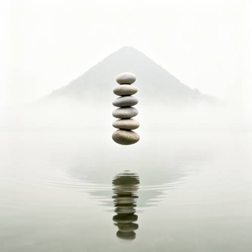
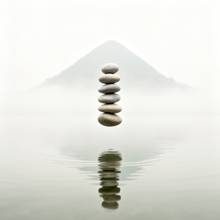

Entity Layout — A tower of smooth cobblestones suspended above the calm water, and bey
A tower of smooth cobblestones suspended above the calm water, and beyond is a vague mountain, the entire scene assumes a Zen feel.

Direct — one call, no iteration

Continuum — Qwen3.8-27B + FLUX.2-dev
Judge — Direct
FAILEntity Layout - Three-Dimensional Space — The image displays a tower of stacked stones in the foreground, positioned within a body of water. The base of the stone tower is not suspended above the water; it rests on a larger stone that is partially submerged in the water, with ripples emanating from it. In the background, across the water, there is a large mountain that appears vague and misty.
Judge — Continuum
PASSEntity Layout - Three-Dimensional Space — In the image, the spatial arrangement of elements aligns with the prompt. In the foreground, there is calm water with slight ripples. Positioned in the middle ground, a tower of six smooth cobblestones is suspended in the air, directly above the water's surface. In the background, beyond the stone tower, the shape of a mountain is visible, its form made vague and indistinct by a thick layer of mist or fog.
What the agent did
Thinking
The user wants a Zen-style image: a tower of smooth stones floating above a still water surface, with hazy mountains in the background, a Zen atmosphere. Let me generate the first version with flux2-dev. Prompt details: A Zen-style, minimalist composition. A tower (stack) of smooth, rounded cobblestones balancing / floating above a glassy, mirror-like water surface. In the far distance, softly hazy mountains, mist, a muted color palette (pale gray, white, soft sage, mist), negative space, serene, minimalist, Japanese zen aesthetic. Let me generate it at a suitable size — probably portrait or square. A floating stone tower above water — a portrait composition might be nice (1024x1024 square is the default; maybe 896x1152 portrait would be better? The harness controls the size… "size and seed are controlled by the harness." Hmm, the note says "do not set the seed. Size and seed are controlled by the harness." So I shouldn't override the width/height — the default 1024x1024 is probably what's expected. Let's leave the size at the default. Let me write a good prompt: "A Zen, minimalist scene: a tall, narrow tower of smooth, rounded cobblestones stacked vertically, balanced and floating just above a perfectly still, mirror-like water surface, gentle ripples… In the far distance, hazy soft mountains fading into mist. Pale muted palette of soft gray, white, and mist. Vast negative space, serene atmosphere, fine-art photography style, soft diffused light." Wait — "floating above a still water surface" — the tower of stones is floating / hovering above the water. Not floating on the water surface, but suspended in the air. So a vertical stack of stones hovering in mid-air above the water. That's the surreal Zen look. Let me generate it.
Step 1 — `generate_image`
{
"prompt": "Zen minimalist scene: a vertical tower of smooth rounded cobblestones, each stone gently balanced atop the next, the entire stack suspended and floating in mid-air above a perfectly calm mirror-like water surface with only the faintest ripples. Beyond the water, a single vague mountain silhouette fading into soft white mist. Pale muted palette of misty white, soft gray, faint sage. Vast negative space, serene tranquil atmosphere, fine-art photography, soft diffused morning light, subtle reflections of the floating stone tower on the water.",
"model": "flux2-dev"
}
Result img_0

Thinking
The result is really good. A tower of smooth stones floats above still water, a hazy mountain is in the background, and it has a zen feel with reflection and ripples. Let me check the details — the stones appear to be floating (the bottommost stone is slightly separated from the water surface — actually, the bottom stone is floating above the water with a gap, and that's exactly the "floating" effect that was requested). The mountain is hazy and distant. The atmosphere is calm. To check for artifacts, let me inspect the stone region at full resolution. Actually, at first glance it looks clean. Let me quickly inspect the stones and the ripples.
Model
The first generation is very close to the intent. Let me inspect the stone tower and water contact at full resolution before deciding.
The cropped image confirmed the following: - The stones are smooth and rounded, well balanced, and look like genuine river cobbles. - The bottommost stone is clearly floating above the water surface (there's a gap between the bottom stone and the water surface) — exactly the "floating" effect. - The water surface is still, with only a faint ripple and a soft reflection. This image is already in excellent shape and satisfies all elements of the prompt: the tower of smooth cobblestones floating above a still water surface, a hazy mountain in the background, and a Zen atmosphere. I should mark this as the best and stop. The result is good enough — it's a successful first-generation render. No edits needed.
Model
The close-up confirmed everything is rendering cleanly: the stones are genuinely smooth and rounded river cobbles, the lowest stone is clearly hovering above the water surface with a visible gap (the suspension effect), and the water is still with faint ripples and a soft mirror reflection. The hazy mountain silhouette and the misty, low-saturation palette carry the Zen atmosphere completely. This is a strong result, and I don't see any points that need fixing.
Step 4 — `mark_best`
{
"image": "img_0",
"reason": "All prompt elements present and correct: tower of smooth cobblestones suspended above calm water with clear hover gap and reflection, vague misty mountain beyond, serene Zen mood with muted palette and negative space."
}
Thinking
Marked. The image is complete and satisfies all the requirements. I'll stop here and report to the user.
Model
Done. The final image delivers exactly what was asked for: - **Suspended stone tower** — a stack of six smooth, rounded cobblestones floating in mid-air, with a clear gap between the lowest stone and the water surface, plus a soft mirror reflection below. - **Calm water** — glassy and still, broken only by the faintest concentric ripples around the tower's reflection. - **Vague mountain** — a single soft mountain silhouette dissolving into white mist on the horizon. - **Zen feel** — pale misty-gray and sage palette, generous negative space, diffused light, and a tranquil, meditative composition. The result was verified at full resolution (stones, hover gap, and water contact all render cleanly) and marked as the best output.